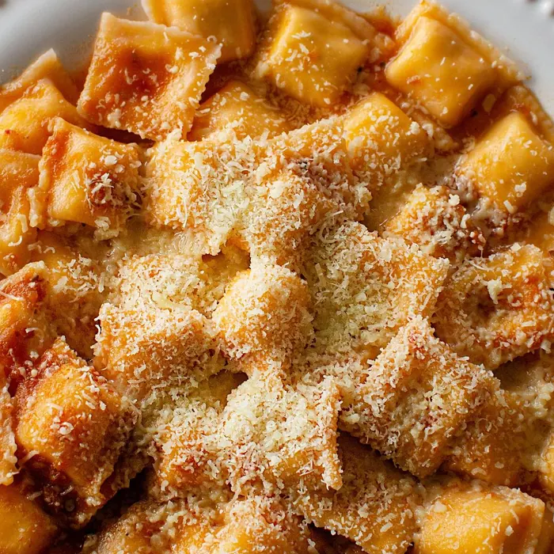
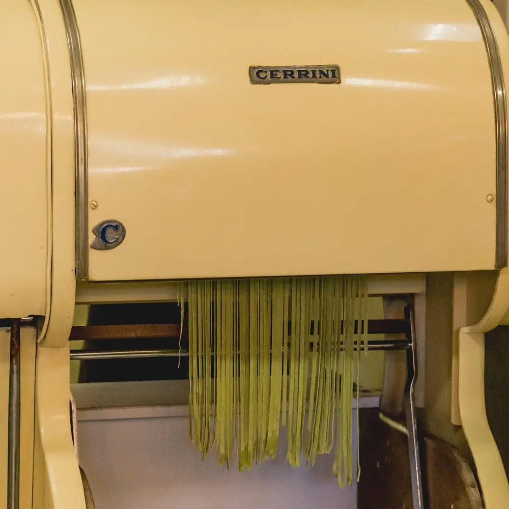
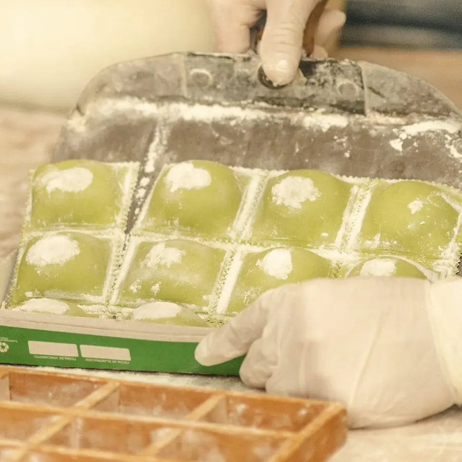
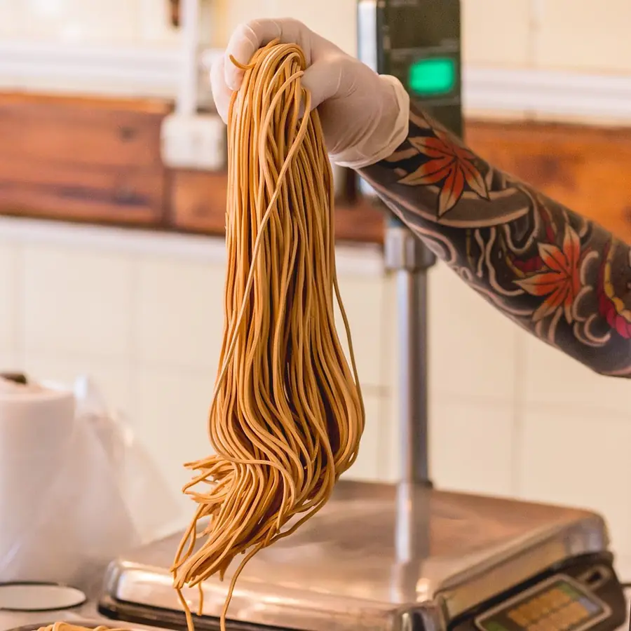
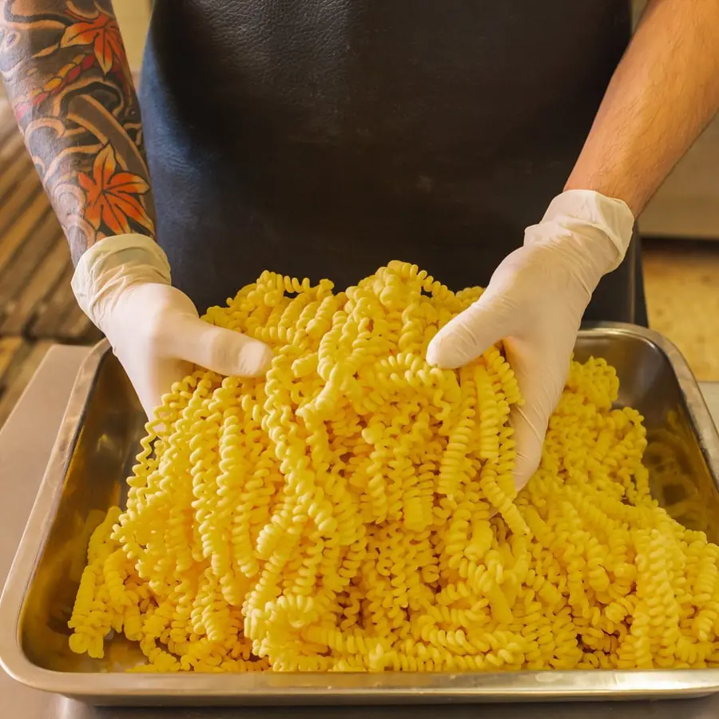
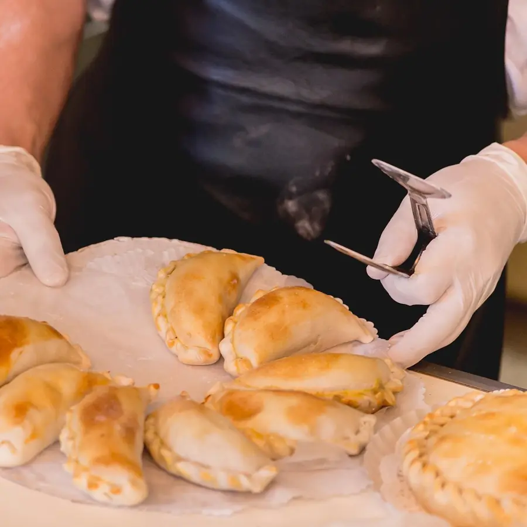
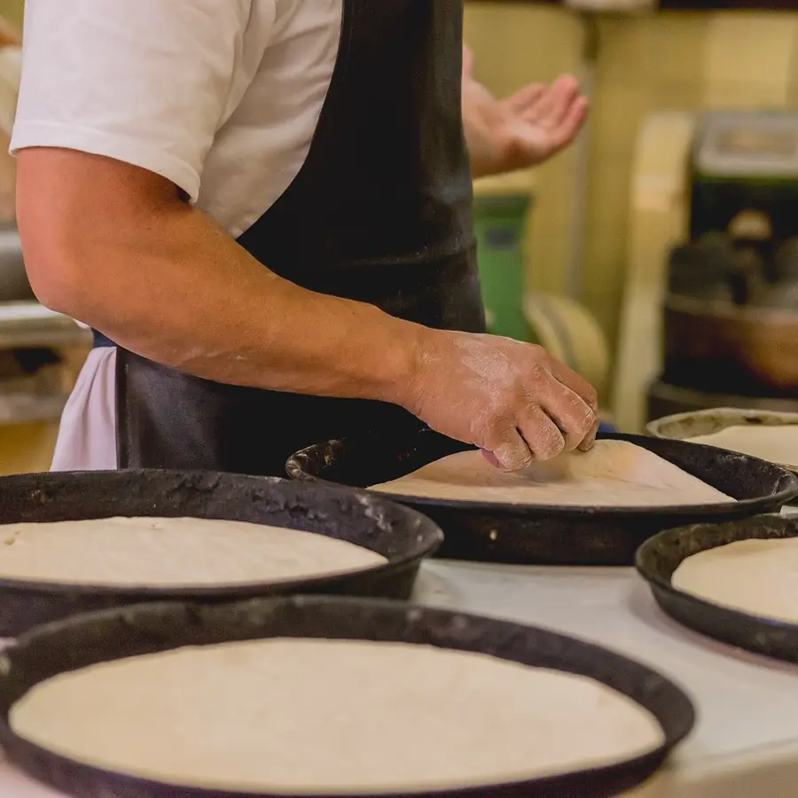
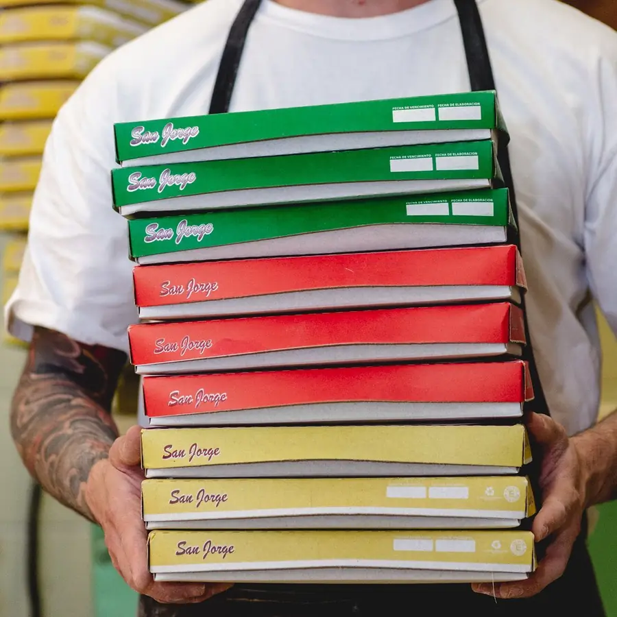

Todos los miércoles
20% en fideos y ñoquis
10% en ravioles
Fábrica de pastas · Villa Devoto · desde 1951
Ravioles, fideos y ñoquis frescos, salsas y comidas listas. Pedí online por caja o por kilo y las promos del día se aplican solas.

HoyEnvío gratis en Villa Devoto
La semana en San Jorge
El sitio sabe qué día es: si pedís un miércoles o un 29, el descuento ya aparece en tu pedido. No hace falta código ni avisar.
Todos los miércoles
20% en fideos y ñoquis
10% en ravioles
Cada 29
15% en ñoquis
Faltan — días para el próximo 29
Todos los días
Envío gratis en Villa Devoto
Pedí con anticipación y elegí mañana (8:30 a 13:30 hs) o tarde (16:30 a 20:30 hs).
Para probar la demo cualquier día: verla como un miércoles · como un 29 · hoy
Carta y pedido
Elegí la caja o el kilo, sumá la salsa y decinos si lo retirás en Bahía Blanca 3084 o te lo llevamos.
Para que salgan perfectas
Elegí tu pasta y poné la olla: te avisamos cuando está lista. Siempre en agua hirviendo, revolviendo para que no se peguen.
Elegí una pasta
0:00
Tocá un banderín para cargar su tiempo.

75 años en Devoto
Desde 1951 la fábrica amasa, estira y corta todos los días para las mesas del barrio. Deslizá la línea del tiempo.
Empieza la fábrica de pastas frescas caseras: “En tu mesa desde 1951”.
Las recetas y la forma de hacerlas se aprenden en el mostrador y en la mesa de trabajo. [AÑOS A CONFIRMAR]
La laminadora sigue estirando la masa y cortando los tallarines, como en la foto.
Con 71 años de oficio, San Jorge vuelve a contar su día a día en Instagram.
La misma fábrica, ahora con el pedido armado desde el celu.
Bahía Blanca 3084
Pastas, tartas, prepizzas y empanadas que salen de la misma cocina que ves desde el mostrador.






Lo que dicen en Google
Reseñas reales de la ficha de Google de San Jorge.
5/5
“Llevan más de 70 años fabricando pastas y la atención de Moni y toda su familia es cálida y amorosa. Te explican todo.”
Andrea Victoria Vellón
5/5
“Ayer compré unos ravioles de pollo y verdura con salsa boloñesa: rico es poco, nos hicieron la cena. Súper recomiendo.”
Celeste Gimenez
5/5
“Son las mejores de la zona. Para destacar, ravioles integrales. No hago más pesto, compro el de San Jorge. Y lo mejor, te lo traen a tu casa.”
Jorgelina Damiano
5/5
“Probamos los sorrentinos de muzzarella y jamón. Son muy lindos, súper rellenos y te hacen quedar bien con cualquier invitado.”
Chiara Rizzo
5/5
“Me atendió Mónica, la dueña, una genia. Compré raviolones caseros exquisitos. Muy recomendable.”
Flavia Di Biase
5/5
“La pasta, una delicia. Se nota el amor y la dedicación que le ponen a cada producto.”
Mariana
Visitanos
En enero cerramos por vacaciones. Pedidos con anticipación: online o al 4502-3790.